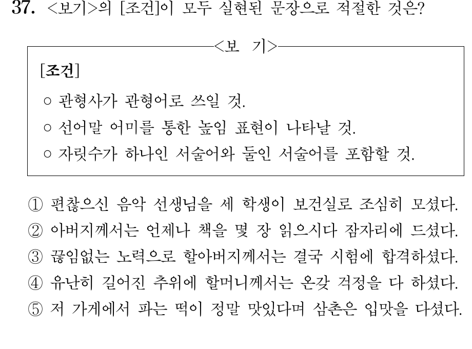
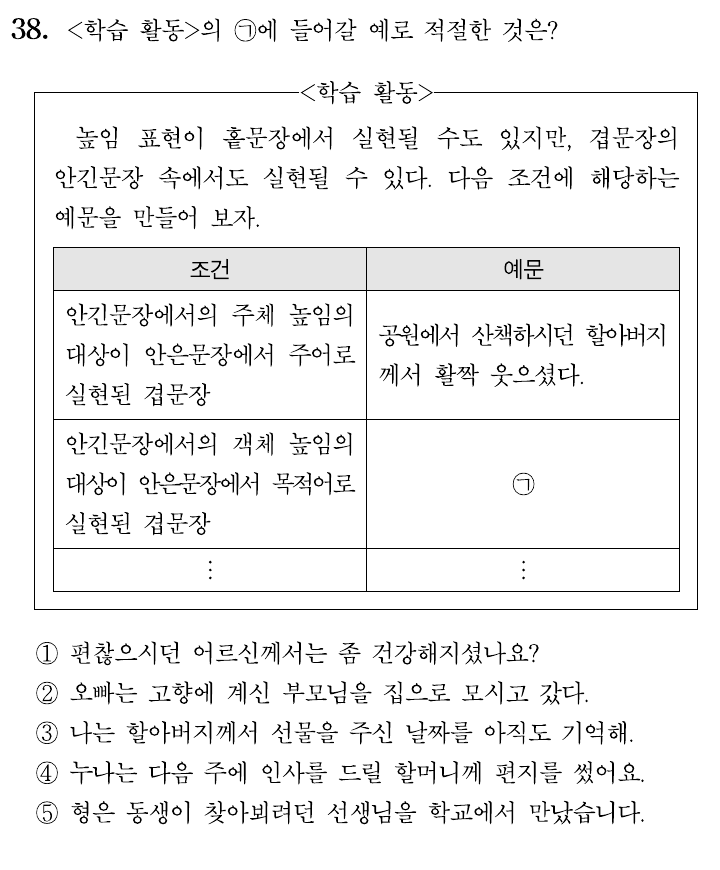

출제 본부 · 국어 영역 검토 기록
문서 번호 화언-3-1110
화법과 언어 3. (1) 문장의 짜임과 문법 요소
검토 마지막 날 아침, 출제 본부의 문이 모두 잠겼다. 방마다 카드를 뒤집어 문제를 풀고, 나온 숫자로 장치를 열어 열쇠 숫자를 모아라. 열쇠 네 개면 정문이 열린다.
| 카드 | 문장 | 근거 (높임 종류 · 대상 · 문장 성분) | 숫자 |
|---|---|---|---|
| 12 | 학생 → 어머니선생님께서 [어머니를 꼭 한번 뵙고 싶다고] 하셨어요. | 뵙다 → 인용절 목적어 어머니(객체) / -시- → 선생님 / -어요 → 어머니 | 4 |
| 25 | 어머니 → 아들[아버지 진지 잡수시라고] 말씀드려라. | 인용절 주어 아버지(잡수시다) / 생략 주어 아들 → 아버지께 말씀드림(객체) | 7 |
| 38 | 손님 → 가게 점원저희 [어머니께 어울릴] 만한 옷 좀 보여 주세요. | 관형절: (옷이) 어머니께 어울리다 → 께 = 부사어 어머니 / 주세요 -시- → 생략 주어 점원 | 2 |
| 카드 | 문장 | 근거 | 숫자 |
|---|---|---|---|
| 14 | [주문하신] 커피가 나오셨습니다. | 관형절 생략 주어 손님 높임 ○ / ‘나오다’의 주어 커피 → 사물 높임 × → 나왔습니다 | 5 |
| 26 | ① 댁에 계신다 ② [손주가 아프다는] 걱정이 있으시다 ③ … 걱정이 계시다 | 직접 → 계시다 / 간접(마음) → 있으시다 → ③ 틀림 | 1 |
| 31 | 손자 → 할아버지할머니께서 [진지 드시라고] 하셨는데 진지가 다 식으셨어요. | 앞 절 -시- 할머니 ○ / 인용절 주어 할아버지 / 뒤 절 주어 진지 → 식었어요 | 9 |

| 카드 | 조건 | 지운 선지 |
|---|---|---|
| 16 | 관형사가 관형어로 쓰일 것 | ③ 끊임없는 |
| 27 | 선어말 어미 ‘-시-’로 높일 것 | ⑤ 다시다 |
| 33 | 한 자리·두 자리 서술어를 함께 | ① ② |

| 선지 | 안긴문장 | 주체/객체 | 안은문장 성분 |
|---|---|---|---|
| ① | 어르신이 편찮으시다 | 주체 | 주어 |
| ② | 부모님이 고향에 계시다 | 주체 | 목적어 |
| ③ | 할아버지께서 선물을 주시다 | 주체 | 성분 아님 |
| ④ | 할머니께 인사를 드리다 | 객체 | 부사어 |
| ⑤ | 동생이 선생님을 찾아뵈다 | 객체 | 목적어 |
정문
방 순서대로 모은 열쇠 숫자
✂ - - - - - - - - - - - - - - - - - - - - - 출구 카드 (잘라서 내고 나가기) - - - - - - - - - - - - - - - - - - - - -
오늘 가장 헷갈렸던 높임 한 가지
누구에게, 어떤 자리에서 말하느냐에 따라 높임이 달라진 예 하나
기출 문항 © 한국교육과정평가원